Back to old projets
2015-2018Website, Application tablette, Mobile...
Aperçu de réalisations en vrac de mes projets réalisés entre 2015 et 2018 pour différents clients, que ce soit en agence, en freelance, ou même juste des essais.
Mon rôle dans chacun de ces projets était de réaliser l'identité visuelle, la réflexion UX design, et parfois la déclinaison d'autres supports.
Je vous laisse découvrir en images...

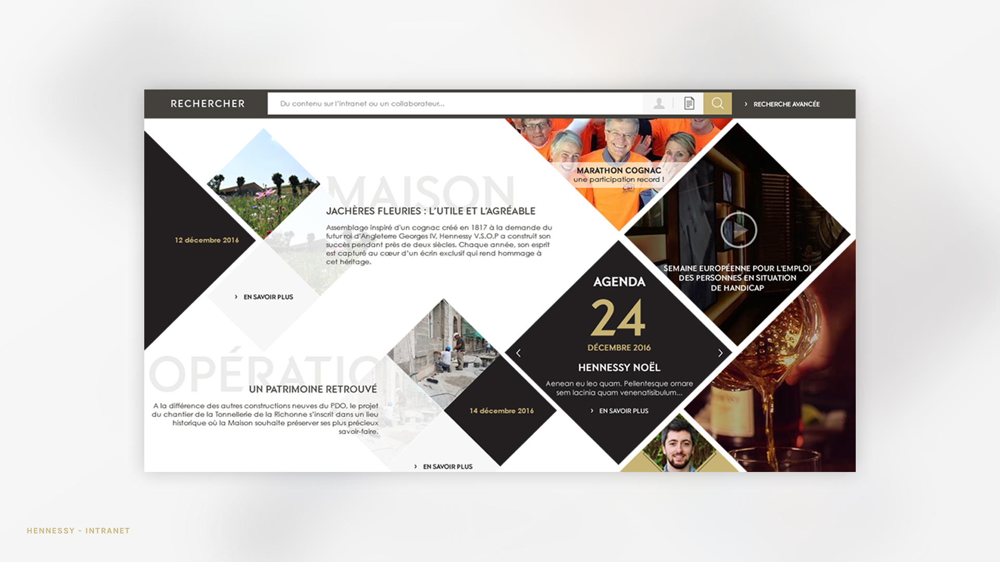
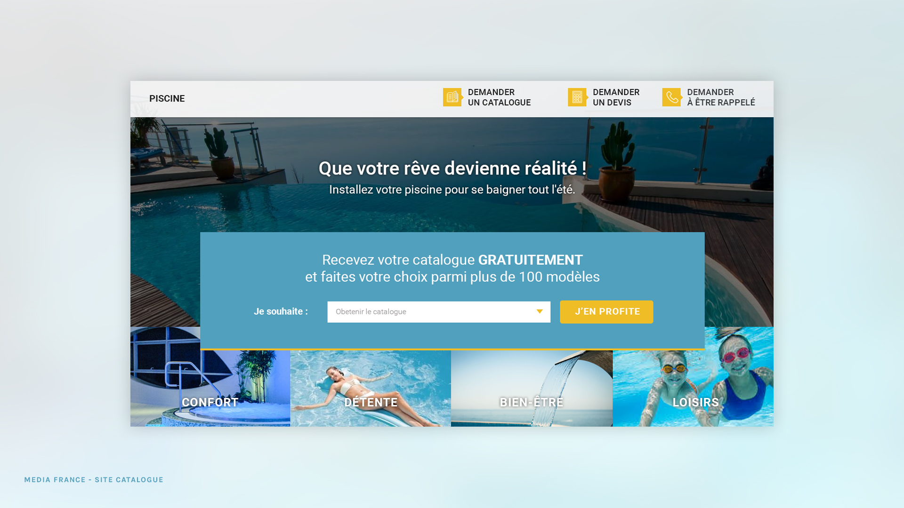
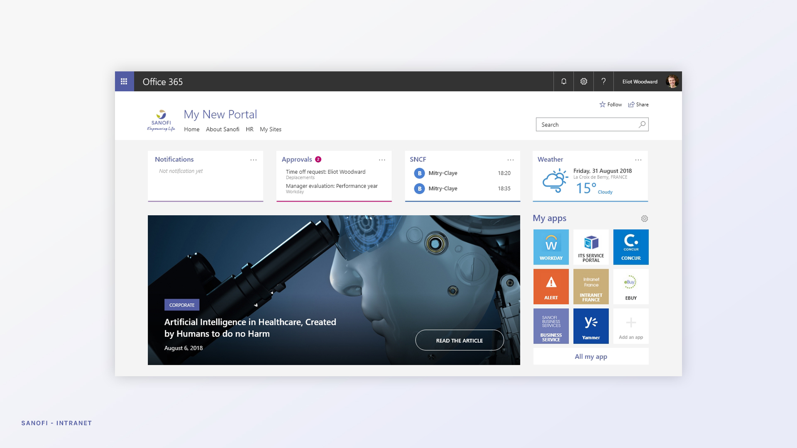
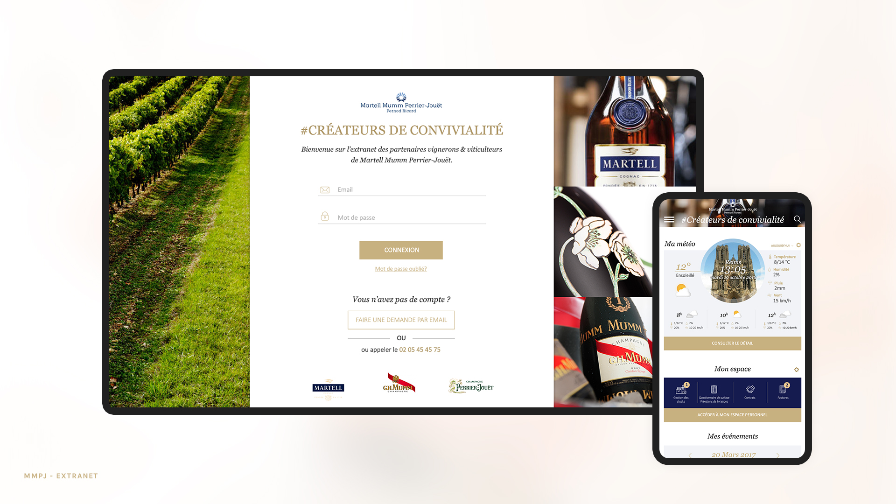
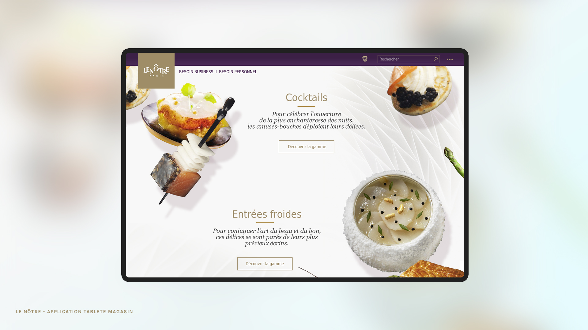

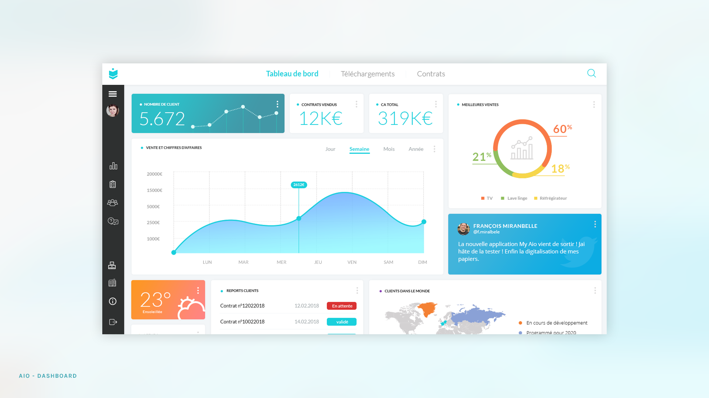
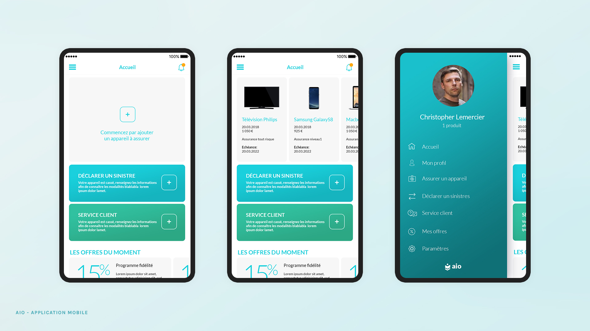
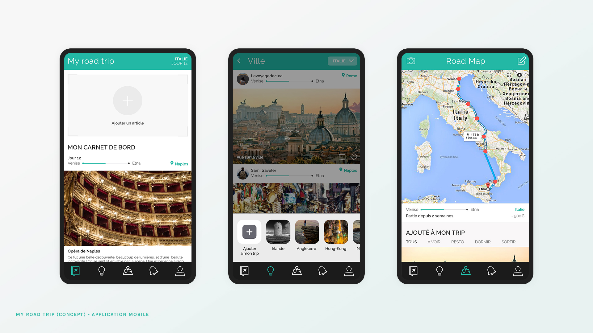
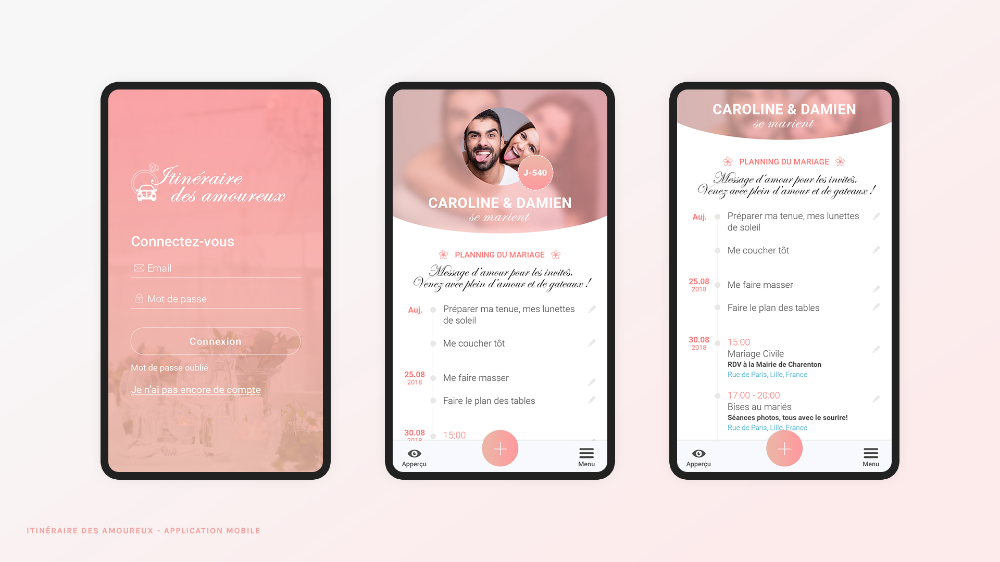
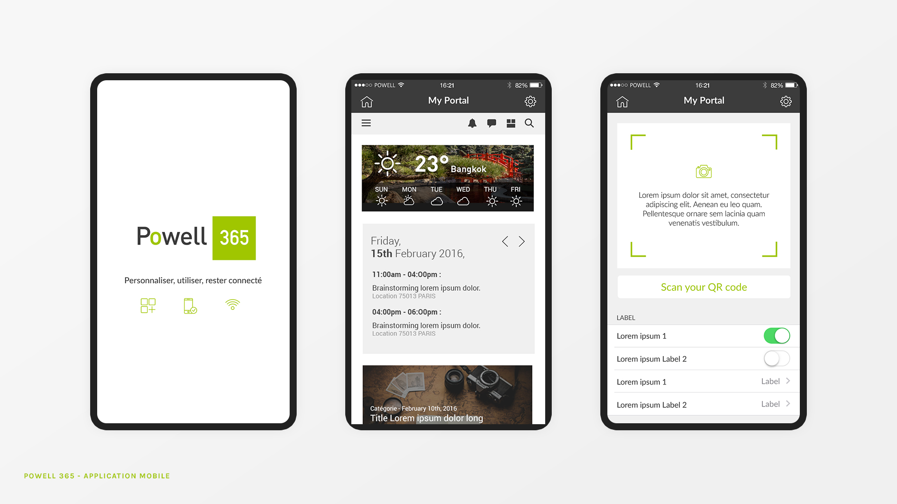
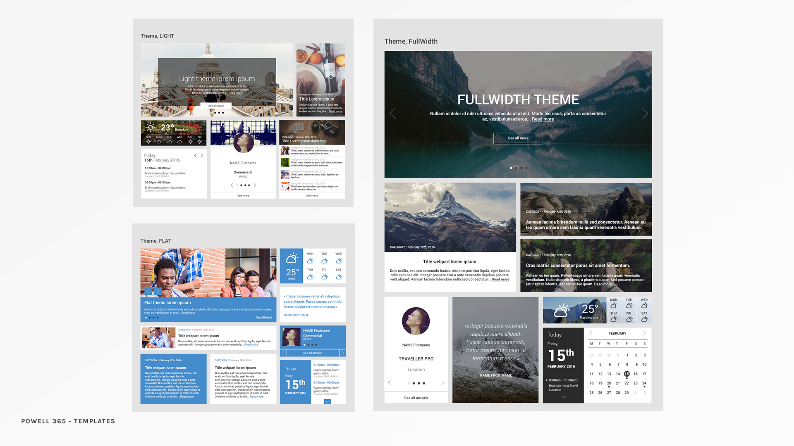
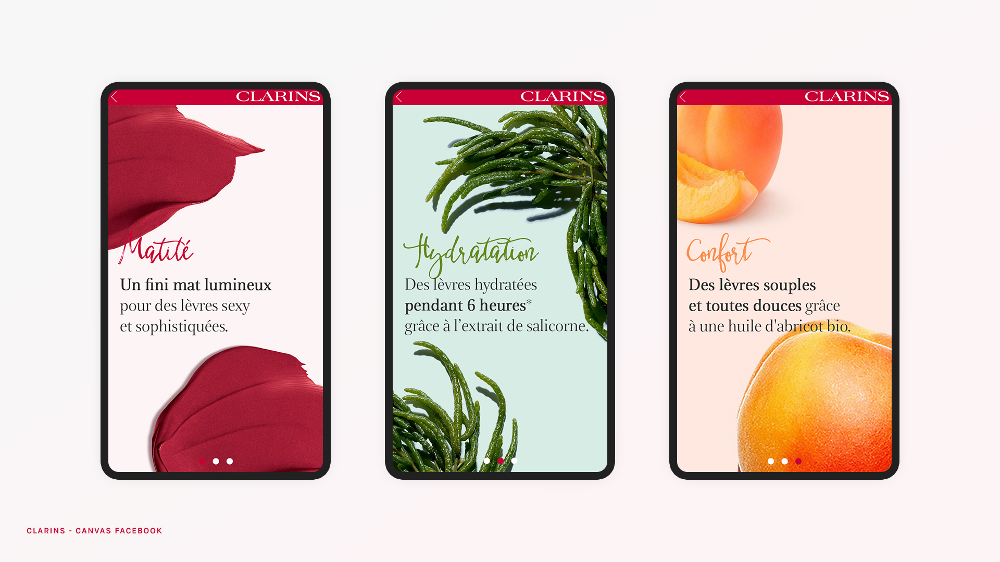
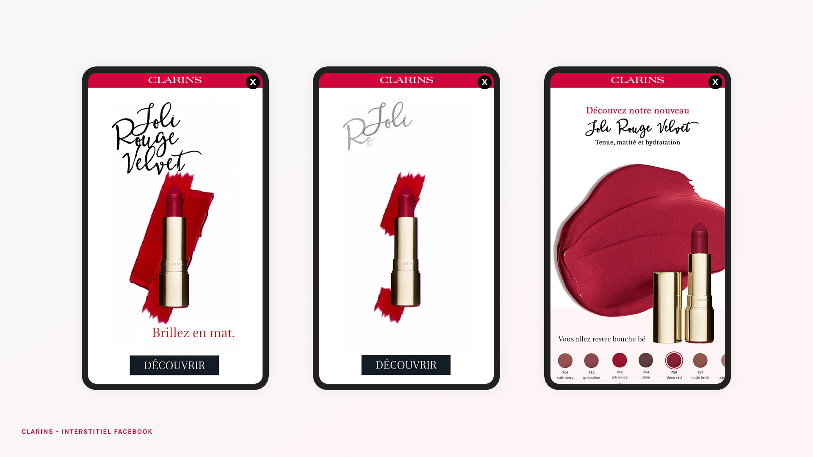
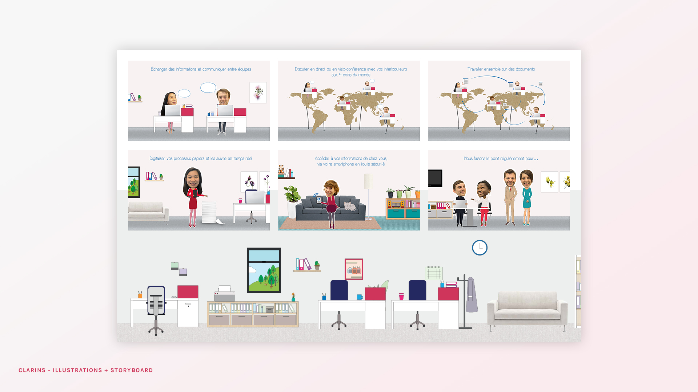
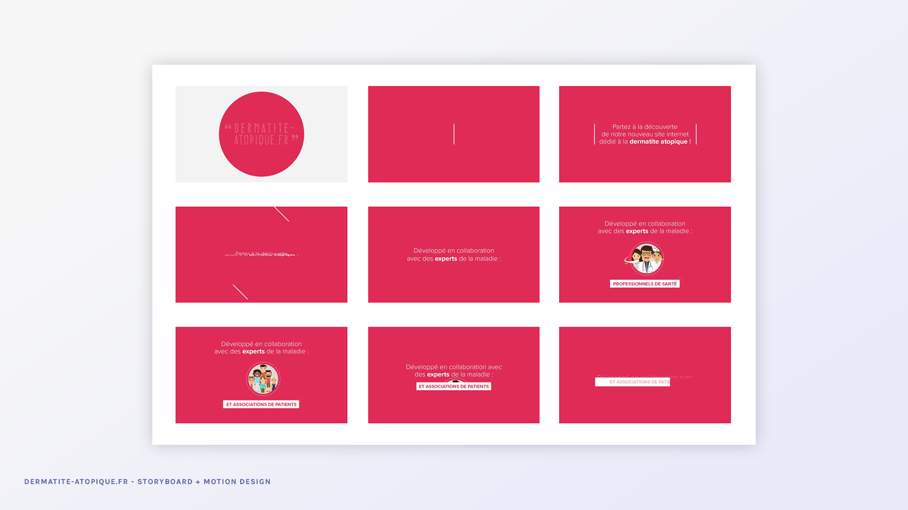
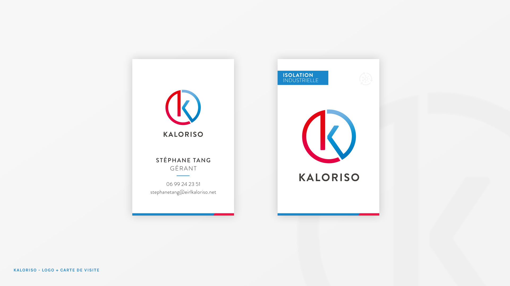
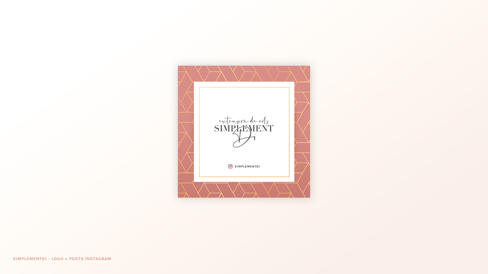